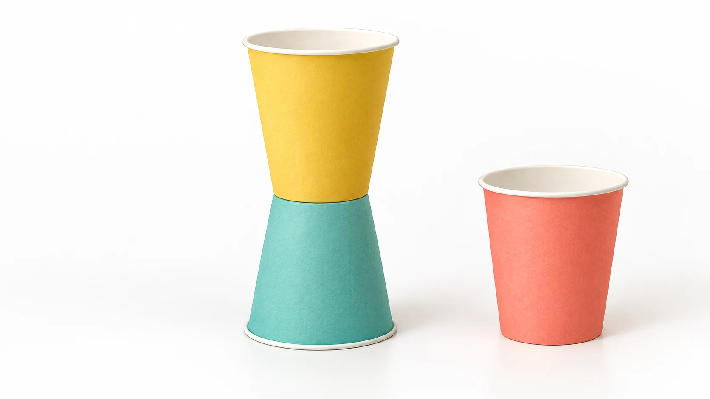

Stack | notice | rebuild
Paper Cup Tower for Kids
Can two cups balance bottom-to-bottom? Try a tiny tower, take it apart, and decide what to change.
Fit and start
Try it when: your child can place a cup gently and follow a stop cue; an adult can stay beside the setup.
Get: two matching intact lightweight paper cups, one optional matching spare, and a clear firm level surface.
- Adult: put one cup upside down. Demonstrate a second cup right side up on it, with the two closed bottoms touching.
- Child: remove the top cup, then try placing it back. Say, "Can you let go gently?"
Stop: after mouthing, throwing, damaged cups, climbing, or unwanted collapse. Keep the build low and remove torn pieces.
Research-backed, not family-tested by Kid Activity Lab. Cup fit and child readiness matter more than an age label.

One small build, then reset
The adult first checks whether these cups can balance in the shown arrangement. Work on the floor or a low surface, away from edges and feet. Pick cups suitable for every child who can reach them; avoid heavy, cracked or sharp-edged substitutes.
- Separate nested cups. Put the first cup opening-down, with its wide rim resting flat.
- Place the second cup opening-up, so its closed bottom rests on the first cup's closed bottom. Do not push one cup inside the other.
- Let go gently and notice whether it stays, leans or falls. An adult may guide the child's hand or model again.
- Lift off the top cup before rebuilding. There is no height target, race or requirement to continue.
Adult role: stay close, keep spare cups out of younger children's reach, and end the setup if pieces are mouthed or thrown. Do not turn the cups into steps or build near a face.
Choose one change
If the two-cup start works and another try is welcome, rebuild with the same cups on the same surface. Try adding the spare cup upside down on top, with its wide rim meeting the upper cup's rim. Keep it low; skip the addition if the cups wobble or cannot meet cleanly.
Ask, "What moved when you let go?" Look for staying, leaning or falling, not a promised stronger or taller result. Then remove the top cup first and reset. Changing the number of cups is enough for one try; no ruler or written record is needed.
If the build stalls
- Cups disappear inside each other
- That is nesting. Separate them, turn the lower cup opening-down and show the two closed bottoms touching. Nesting can be the chosen play instead; it is not the same balance test.
- It falls straight away
- Check for dents and a sloping or soft surface. Try a different matching pair. If they still cannot balance, place cups side by side and arrange a row rather than forcing a tower.
- Placement is difficult
- Let the child choose where the base goes while the adult models the top placement. Return to one cup or arrange a row; no tall build is required.
- Falling is no longer welcome
- Take the cups apart gently instead of knocking them down. End or switch activities when the child wants to stop.
Make it fit the child and space
Materials: the default is matching lightweight paper cups. Intact lightweight plastic cups of uniform size are another source-supported material, but the adult must recheck their shape and balance; they are not automatically interchangeable. Skip glass, metal cans and damaged cups.
Placement and reach: use a reachable firm low surface, with supported seating if helpful. One child can choose an arrangement while the adult places cups. For mixed ages, take turns with the same small set and keep the spare with the adult; do not give a younger child loose pieces just to keep them occupied.
Sound or attention: take cups apart rather than making a collapse, and offer one placement at a time. These are editorial options, not therapeutic guidance or evidence that an adaptation will work for a particular child.
Preparation: separate and inspect cups, clear the area, and demonstrate once. No cutting, glue, tape, measurement or recording is needed. Duration and mess have not been measured by Kid Activity Lab.
Finish with the cups accounted for
Remove the upper cups first. Collect the whole set together; the adult removes damaged cups and loose pieces promptly and stores the set out of younger children's reach. Do not reuse damaged cups for play. Supervision and these stop boundaries are not a safety assurance.
Sources and limits
Sources checked September 17, 2026. Kid Activity Lab has not recorded a family test of this setup. Timing, comprehension, engagement, enjoyment, learning, repeatability, frustration, mess and safety outcomes remain unknown.
- DiscoverE: Tallest Cup Tower supplies the bottom-to-bottom demonstration and uniform paper/plastic cup materials. Its classroom competition uses a much larger set; this reduced, noncompetitive start is a KAL editorial adaptation.
- Education.com: Creating a Cup Tower describes paper-cup redesign with height measurement and recording. We do not reproduce that measured lesson or promise its outcomes.
- Growing Up NYC: Cup Tower supports adult demonstration and rebuild play with plastic cups, not this exact paper-cup quantity or geometry.
The small-set sequence, readiness cues, scripts, rescues, adaptations, supervision and cleanup wording are editorial synthesis. The illustration does not establish physical performance. There is no guaranteed cup fit or child outcome.